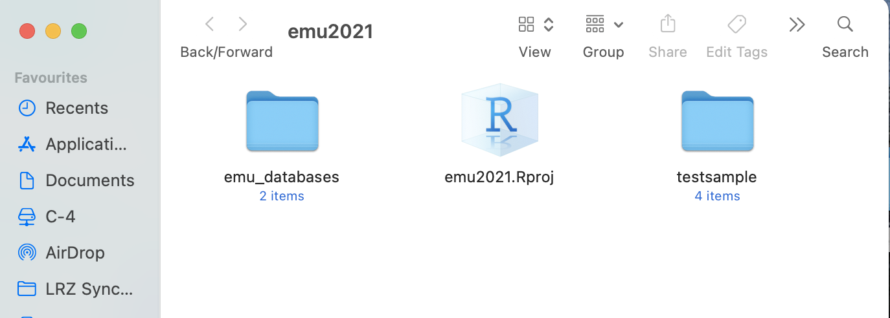
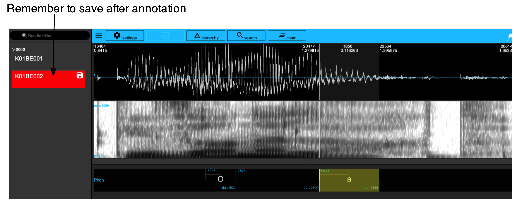
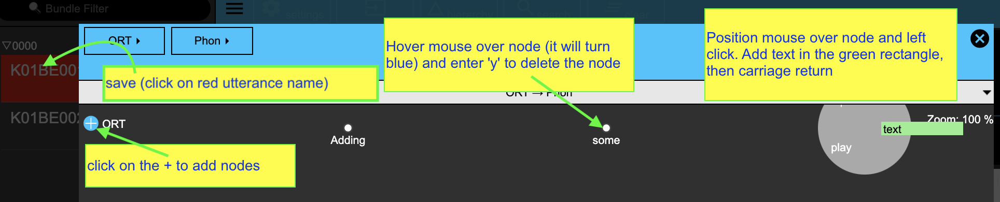
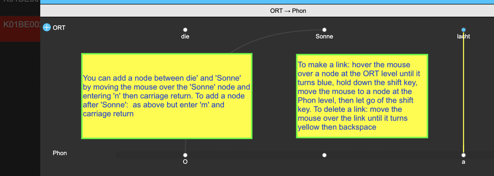

library(tidyverse)
library(emuR)
library(wrassp)3 Creating an Emu database from .wav files
3.1 Preliminaries
If you want to code along with this chapter, you should download and unzip the file testsample (accessible here). Store the testsample folder in the ipsR directory you made when you did the initial setup for the tutorial. Also create as directory called emu_databases on your machine in the ipsR directory. The directory should now look like this:

Now start up R and load the following libraries:
In R, store the path to the directory testsample under the name sourceDir in the following way:
sourceDir <- "./testsample"And also store in R the path to emu_databases as targetDir:
targetDir <- "./emu_databases"Note that if you source this tutorial directly from GitHub, these documents and file structures are already available in the tutorial R project.
3.2 Creating an Emu database from scratch
In this chapter, we will see how to build an Emu database from scratch.
One of the test samples you downloaded earlier is called german. Store the path to this directory as below:
path.german <- file.path(sourceDir, "german")This database contains the following sound files (we use the pattern="*wav" argument to get only files where the name ends in wav).
list.files(path.german, pattern = "*wav")[1] "K01BE001.wav" "K01BE002.wav"We create an empty database using the create_emuDB() command:
create_emuDB(name = "german",
targetDir = targetDir)This can now be loaded in using the load_emuDB() command we saw in the previous chapter.
german_DB <- load_emuDB(file.path(targetDir, "german_emuDB"))What’s in the database? Nothing!
summary(german_DB)── Summary of emuDB ────────────────────────────────────────────────────────────Name: german
UUID: 7fd56a9f-afc9-40fd-95ff-88af18273590
Directory: C:\Users\rasmu\surfdrive\emuintro\emuintro\emu_databases\german_emuDB
Session count: 0
Bundle count: 0
Annotation item count: 0
Label count: 0
Link count: 0 ── Database configuration ──────────────────────────────────────────────────────── SSFF track definitions ──dataramme med 0 kolonner og 0 rækker── Level definitions ──dataramme med 0 kolonner og 0 rækker── Link definitions ──dataramme med 0 kolonner og 0 rækkerWe can import the WAV files in our German test sample into the database using the import_mediaFiles() command:
import_mediaFiles(german_DB, dir = path.german, verbose = FALSE)What’s in the database now? Not nothing!
summary(german_DB)── Summary of emuDB ────────────────────────────────────────────────────────────Name: german
UUID: 7fd56a9f-afc9-40fd-95ff-88af18273590
Directory: C:\Users\rasmu\surfdrive\emuintro\emuintro\emu_databases\german_emuDB
Session count: 1
Bundle count: 2
Annotation item count: 0
Label count: 0
Link count: 0 ── Database configuration ──────────────────────────────────────────────────────── SSFF track definitions ──dataramme med 0 kolonner og 0 rækker── Level definitions ──dataramme med 0 kolonner og 0 rækker── Link definitions ──dataramme med 0 kolonner og 0 rækkerThe following bundles are available:
list_bundles(german_DB)Note that all bundles are associated with a session. If the sound files all come from a single directory, they are assigned to a session called 0000. If our testsample/german directory had had multiple subdirectories, these would be assigned to different sessions with the same names as the subdirectories.
You can now serve() the database and have a look at the data.
serve(german_DB, useViewer = F)We’re almost always interested in adding annotations to our databases. You can add an annotation level using the add_levelDefinition() function. Annotation levels need a name (we call this one Phon) and a type. The type is SEGMENT because we want to add annotation units with start and end times; the different types of annotation levels (SEGMENT, ITEM, and EVENT) were presented in the previous chapter.
add_levelDefinition(german_DB,
name = "Phon",
type = "SEGMENT",
verbose=FALSE)Will this new annotation level be shown when we serve() the database again? We can check this with get_levelCanvasesOrder(), as seen in the previous chapter
get_levelCanvasesOrder(german_DB,
perspectiveName = "default")NULLNope! New annotation levels are not shown by default, but need to be explicitly added to a perspective with the function set_levelCanvasesOrder().
set_levelCanvasesOrder(german_DB,
perspectiveName = "default",
order = "Phon")If we now serve() the database, the Phon level should be visible.
serve(german_DB, useViewer = F)It’s still empty though. Try to annotate some segments as in Figure 3.1, e.g. /O, a/ for the vowels of Sonne and lacht in K01BE002 and save the annotations.

german_emuDB.
Some information about annotating in Emu
The procedure for entering annotations into Emu may not be immediately intuitive especially if you are used to doing this in Praat. Once you get the hang of it, though, it is very fast!
Creating an interval can be done as in Praat. Place your cursor at the desired start point of an interval, then left click your mouse and hold it while dragging your cursor to the desired end point of an interval, and then let go of the clicker. (If this sounds complicated – it isn’t! Don’t overthink it, just think of it as the usual way to mark some interval with your mouse.) Now hit the enter key on your keyboard. This should draw two vertical lines signaling the boundaries of your segment.
If you don’t want to create an interval but simply one boundary, simply place your cursor somewhere in the spectrogram or waveform, left click your mouse, and hit the enter key. This should draw a single vertical line.
Deleting a boundary can be done by simply placing your cursor near the boundary you want to delete. You should see it turn from right to blue – this means that it is selected, you don’t need to click it. Now hit the backspace key on your keyboard. This should delete the boundary, and if relevant, it will combine the text in two adjacent intervals. If you want to delete an interval including the annotations in it, left click somewhere within the interval and press Shift + Backspace. This will expand the surrounding intervals.
To enter a label, left click inside an interval, and hit the enter key. Alternatively you can use your arrow keys to move left and right between intervals, and hit the enter keys when you have found the one you want to edit. If you have just created a boundary, it is automatically selected, and you can hit enter right away to start entering a label. The interval will now turn bright yellow, and you can type in text. When you are done typing, hit the enter key again.
To move a boundary, simply place your cursor near a boundary as explained above, hold down the Shift key, and move your cursor left to right. Let go of the Shift key when the boundary is in the right position.
To save an annotation, either hit Shift + S, or left click on the Save icon next to the bundle name in the left side your Emu window; it will have turned red.
Assuming you have managed to annotate the segments as in Figure 3.1 above, the segments should now be accessible in R with the function query(). (As mentioned in Chapter 1, the Emu query language is one-of-a-kind and very flexible! It will be discussed in much more detail in Chapter 7.)
query(german_DB, "Phon =~ .*")3.3 Adding word annotations
The next task is to add orthographic labels as ITEM annotations. This should be done if either (a) the start and end times are of no concern and/or (b) a word’s start and end time are inherited from segments. There are three steps:
Add a new level to the database using the command add_levelDefinition(). Here we add one with the name ORT:
add_levelDefinition(german_DB,
name = "ORT",
type = "ITEM",
verbose=FALSE)Define how it is linked with a time-based level, in this case with Phon. We do this with the command add_linkDefinition. The different types of link were discussed in Chapter 2.
add_linkDefinition(german_DB,
type = "ONE_TO_MANY",
superlevelName = "ORT",
sublevelName = "Phon")Finally, we can check that the hierarchical links are as expected using the function list_linkDefinitions().
list_linkDefinitions(german_DB)3.3.1 Adding ITEM annotations via the EMU-webApp
Open the hierarchy window for utterance K01BE001, and click on the blue and white + sign next to ORT. Each time you do so, a node appears. You can enter annotation text for any node by positioning the mouse over it and then left click to bring up a green rectangle (see figure below) into which you can type text and then hit enter. To delete a node, move the mouse over it and hit the y key. Further details can be seen in the figure below.

If you have done something as in the above figure, you should be able to access the annotations in R. Notice the NA under start and end times. This is because they are timeless, i.e. unlinked to any annotations of a time (SEGMENT or EVENT) tier.
query(german_DB, "ORT=~.*")3.3.2 Adding ITEM annotations via the emuR
You can also add timeless annotations (in this case to the ORT tier) with the function create_itemsInLevel(). This requires passing a data frame with certain specific requirements to the itemsToCreate argument. This data frame should have the columns labels, session, bundle, level, start_item_seq_idx, and attribute, with one row for each annotation to be added. In this example, the words die Sonne lacht will be added to the second utterance.
Let’s make a data frame with this information step-by-step. First, we store the sentence as a vector w with a string corresponding to each word:
w <- c("die", "Sonne", "lacht")What session do the labels belong to? In this case there is only one session, 0000. Make a vector with the same length as w which repeats the session name.
sess <- rep("0000", length(w))What bundle do the labels belong to?
bundle <- rep("K01BE002", length(w))What’s the name of the annotation level? This will be ORT as created above, and in this case the attribute name is identical to the level name (see Chapter 1 for more details).
lev <- rep("ORT", length(w))What order do the annotations occur in? This is 1, 2, 3 for die Sonne lacht.
inds <- 1:length(w)Put all the above information into a data frame as follows:
newItems_ORT <- data.frame(session = sess,
bundle = bundle,
level = lev,
start_item_seq_idx = inds,
attribute = lev,
labels = w,
stringsAsFactors = F)
newItems_ORTAdd these word annotations to the database:
create_itemsInLevel(german_DB, newItems_ORT,
verbose=FALSE)
Using
create_itemsInLevel() with SEGMENT or EVENT levels
You can also add annotation items for annotation levels with time information, i.e. SEGMENT or EVENT levels. This requires a data frame with the same columns as newItems_ORT which we created above, but instead of having numeric indexes in the column start_item_seq_idx, this column should contain the start time in ms of the selected boundary. (In the case of an EVENT level, this should be called start instead of start_item_seq_idx).
If you’re creating annotation items programmatically in a SEGMENT tier in this way, you’ll likely also want to add an end time. Somewhat counterintuitively, you do this by adding another row to the data frame with an empty label. If we wanted to use create_itemsInLevel() to create the vowel labels in K01BE002 that we made manually below, we would do it like this:
w <- c("O", "", "a", "")
sess <- rep("0000", length(w))
bundle <- rep("K01BE002", length(w))
lev <- rep("Phon", length(w))
times <- c(1048.5, 1111.7, 1275, 1391.1)
newItems_Phon = data.frame(session = sess,
bundle = bundle,
level = lev,
start_item_seq_idx = times,
attribute = lev,
labels = w,
stringsAsFactors = F)
newItems_PhonThe newItems_Phon can now be passed onto the create_itemsInLevel() function as we saw above. This of course requires us to know our boundary times already, but one can easily imagine a situation where signal processing tools are used to find landmarks in sound files, and these landmarks are then used to create boundaries.
If we use query() as above, we should now see words in both bundles:
query(german_DB, "ORT=~.*")Have a look at the database again:
serve(german_DB, useViewer = F)Look at the hierarchy for the second utterance. The word annotations in the ORT tier should now be visible. These can be linked manually in the Emu-WebApp so that the word labels are accessible in emuR. Please see section 9.2.2 of the Emu SDMS manual for details on how to annotate hierarchically.
Some information about annotating hierarchically
Adding hierarchical links and annotations is not difficult. The present task is to add links from O and from a at the Phon tier to Sonne and to lacht respectively at the ORT tier. To do this for the first of these, hover the mouse over Sonne (the node will turn blue), hold down the shift key, and sweep the mouse to O (whose node will also turn blue), release the shift key, and the link is made. If you want to delete the link, hover the mouse over it (the link will then turn bright yellow) and hit backspace.
You can add new nodes at the ORT tier as follows: Move the mouse over lacht, type n and hit enter. This will create a new node before lacht (between Sonne and lacht). If you enter m instead of n in the above operation, a new node will be created after lacht. To edit or play a node at the ORT tier, left click on the node. You can enter or modify text in the green panel. To denote a node at the ORT tier, hover over it and enter y. See figure below.

If you have annotated as in the above figure and saved it, the words and their times will be accessible (note that the times at the ORT level and the same as the times at the Phon level, because each word only dominates one segment (and inherits its times from those). Note also that die has no times, because it hasn’t been linked to any annotations at the Phon level. We can check this with query:
query(german_DB, "ORT =~ .*", bundlePattern = "K01BE002")3.4 Functions introduced in this chapter
create_emuDB(): makes an emuDB from scratchimport_mediaFiles(): adds sound files to an emuDBcreate_itemsInLevel(): allows for annotating an emuDB programmatically from R.query(): queries the annotation levels in an emuDB. This will be discussed in much more detail in Chapter 7.